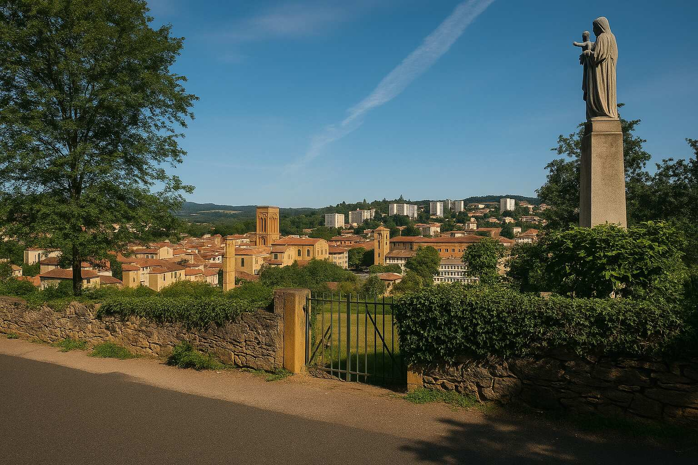

Opposition au crématorium en zone d'habitation
Un projet de crématorium est actuellement envisagé rue de la Madone, à la frontière de Fleurieux, Eveux et L'Arbresle. Brévenne Sereine s'y oppose non par principe, mais parce que sa localisation et son étude d'impact sont inadaptées.
- Site trop proche des habitations (50 m)
- Aucune étude de circulation ni d'émissions
- Risque pour la rivière Brévenne
- Choix du terrain sans concertation
- Impact sur la biodiversité